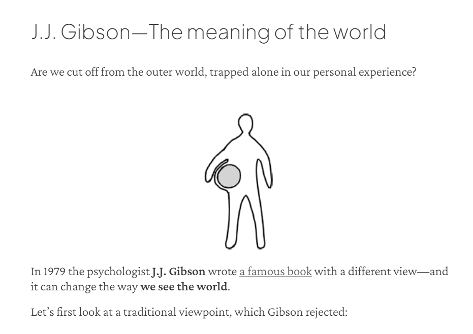
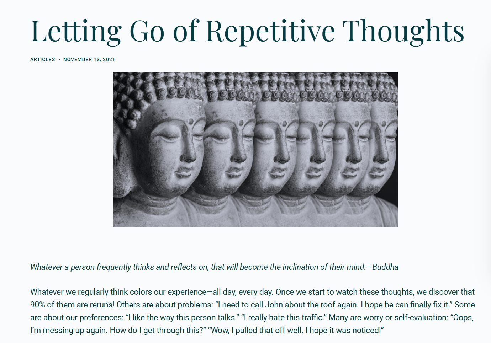
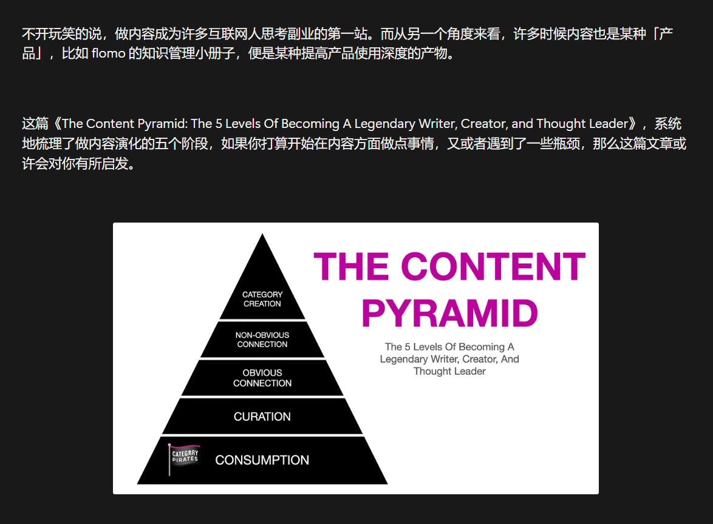

J.J. Gibson — 世界的意义

"We are not strangers in this world. We are part of it. And this means something."
Gibson 的核心观点：视觉不是被动接收图像，而是主动寻找环境中的"affordance"（可供性）——事物向我们"提供"的行动可能性。
我们并非这个世界的异乡人。我们是它的一部分。而这，本身就意味着什么。
一把椅子不是"一个有四条腿的木制物体"——它是在说"坐下"。一扇门不是"一块竖着的木板"——它是在说"推开"。环境不是中性的背景板，它充满了对我们发出的邀请。
1. 产品的 affordance 比功能更重要。 用户不会读说明书，好产品应该"自己说话"。一个按钮看起来就该能按，一个输入框看起来就该能打字。如果用户需要思考"这个东西怎么用"，设计就失败了。
2. 环境塑造行为。 Gibson 说环境充满意义——产品也是用户的环境。微信的"撤回"2分钟设计，不只是功能，更是在塑造一种"你可以后悔"的安全感。好的产品设计是在创造一种有意义的交互环境。
3. "感知"先于"认知"。 用户在使用产品之前就已经在感知它了——视觉、触觉、甚至情绪预判。第一印象不是理性的，是感知层面的。这也是为什么很多功能强大的产品输给了"看起来好用"的产品。
Gibson 的哲学最打动我的是这句话——"我们不是世界的陌生人"。
做产品久了容易陷入一个误区：觉得用户需要被"引导"、被"教育"。但 Gibson 提醒我们，用户天生就能感知到什么是好的设计——就像人天生就知道一把椅子是用来坐的。
真正的挑战不是教用户怎么用，而是让产品本身"说清楚"。
不要教育用户，要倾听他们的感知本能。
Jack Kornfield — 智慧之思

Jack Kornfield 是西方最具影响力的正念导师之一，他将缅甸禅修传统引入美国硅谷心理学语境。他的文章核心围绕：
• 正念不是追求完美，而是接纳当下的不完美
• 焦虑不是敌人，而是内心在提醒你"有什么需要注意了"
• 真正的自由不是控制一切，而是学会与不可控共处
1. 产品也可以有"正念设计"。 现在的互联网产品都在争夺用户注意力——无限滚动、推送通知、红点焦虑。但反其道而行之呢？一个提醒用户"你已经看够了"的功能，一个主动说"休息一下"的界面——这可能是更高级的用户关系。
2. 接纳用户的"负面情绪"。 Kornfield 说焦虑不是敌人——产品也应该这样想。用户在使用产品时的挫败感、犹豫、放弃，不是"需要消灭的 bug"，而是"需要倾听的信号"。好的产品经理会把用户放弃的瞬间当作最珍贵的反馈。
3. "少即是多"的正念版。 正念教我们放下执念，产品也该学会"放下"——放下不必要的功能、放下过度设计、放下"我们必须做点什么"的冲动。有时候最好的迭代是决定不做任何事。
读完 Kornfield 最大的感受是——我们太习惯于"解决问题"的思维了。
产品人看到用户反馈就想去"修复"，但 Kornfield 说：有些东西不需要修复，只需要被看见。
这不是说产品不需要迭代，而是说——在动手之前，先停下来，真正理解用户在经历什么。
有时候"理解"本身就是最好的解决方案。
产品沉思录 — 方法论的力量

产品沉思录（PM Thinking）是一系列关于产品方法论的深度文章，涉及：
• 需求判断——如何区分"用户说的"和"用户真正需要的"
• 优先级框架——资源有限时如何做取舍
• 产品决策机制——建立可复用的思考框架而非依赖直觉
• 产品人的元认知——"我怎么知道我知道什么"
1. 需求判断的本质是"翻译"。 用户说"我要一匹更快的马"，但真正需要的是"更快的交通工具"。产品人的核心能力不是听用户说什么，而是翻译出用户没说什么。这个翻译过程需要方法论支撑——否则就是猜。
2. 优先级是产品人的核心能力。 资源永远不够，时间永远不够。能决定"现在不做"比决定"现在做"更能体现产品功力。方法论框架（如 ICE、RICE）不是用来算分的，是用来强迫你想清楚"为什么做"的。
3. 好产品是"管"出来的，不是"做"出来的。 产品管理本质上是决策管理——建立一套机制，让每个决策都有据可依，而不是拍脑袋。
产品方法论读多了会有个错觉：觉得掌握了框架就等于掌握了产品。但实际上，框架只是起点。
• 框架告诉你"该想什么"，但不告诉你"怎么想"——后者靠经验
• 最好的产品经理不是最会写文档的，而是最会"问问题"的
• "这个问题为什么重要？" 比 "这个问题怎么解决？" 更关键
方法论像地图——它告诉你方向，但路还是要自己走。不要迷信框架，但要学会用它。